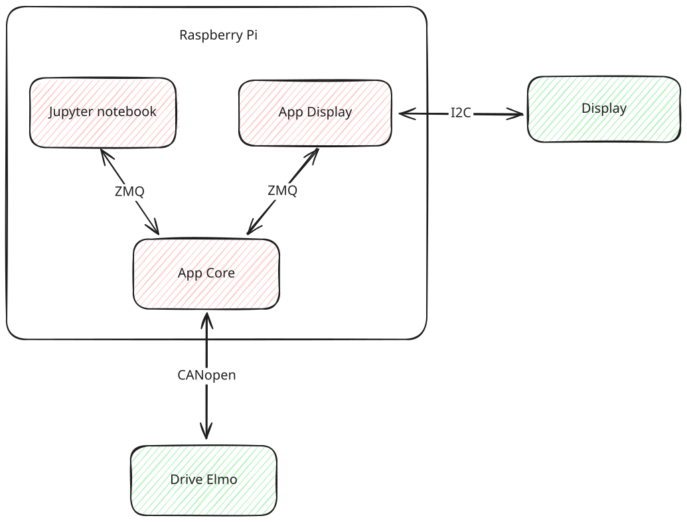

Application
Services
3 services tournent sur le Raspberry Pi 5 pour faire fonctionner la pendule de Furuta :
- Application core (furuta-core.service) : service principal de l'application, écrit en C++. Il gère la communication CANopen avec le drive ELMO, exécute la régulation en temps réel et communique avec les autres services via une mémoire partagée.
- Application display (furuta-display.service) : service responsable de l'affichage sur l'écran OLED du pendule de Furuta et de la gestion des quatre boutons. Il permet de changer de mode et d'afficher l'état du pendule sans PC.
- Jupyter notebook server (furuta-jupyter.service) : service qui héberge les notebooks Jupyter pour l'interaction utilisateur et la visualisation des données. Pas encore disponible.
Les unités systemd furuta-core.service et furuta-display.service sont fournies dans le dossier service/ du dépôt pendule-furuta-core.

Tip
Les services peuvent être gérés avec systemctl :
sudo systemctl start furuta-core.service
sudo systemctl stop furuta-display.service
sudo systemctl status furuta-jupyter.service
Application core (furuta_core)
L'application core se trouve dans le dépôt pendule-furuta-core. Elle est écrite en C++ et s'appuie sur la bibliothèque lely-core pour jouer le rôle de master CANopen sur le bus can0.
- Master CANopen : node 1, configuré par
master_config.yaml(le fichiermaster.dcfest généré avecdcfgen -r master_config.yaml). - Drive ELMO : node 127, décrit par le fichier EDS
elmo.eds. - Cadence : le master émet un message SYNC toutes les 2 ms (
sync_period: 2000µs). Le drive publie ses mesures par TPDO synchrones et le core calcule le couple à chaque SYNC, soit à 500 Hz.
Les objets échangés par PDO sont :
| Sens | Objet | Contenu |
|---|---|---|
| drive → core | 0x6064 |
position du bras (codeur moteur) |
| drive → core | 0x606C |
vitesse du bras |
| drive → core | 0x20A0 |
position du pendule |
| drive → core | 0x2F00:01 |
vitesse du pendule |
| drive → core | 0x6078 |
courant moteur (‰ du courant nominal, converti en A) |
| core → drive | 0x6071 |
consigne de couple (Target Torque) |
Le courant moteur (0x6078) est publié par un TPDO dédié : il est lu à chaque SYNC (converti en ampères à partir du courant nominal 0x6075 du drive) et enregistré dans les acquisitions. Il donne une image directe du couple réellement appliqué.
Le drive est configuré en mode Profile Torque au démarrage. En mode IDLE, l'étage de puissance est coupé (moteur libre) ; il n'est activé (Operation Enabled) qu'à l'entrée dans un mode actif.
Pour garantir un comportement proche du temps réel, le service systemd lance l'application avec une priorité FIFO élevée sur un cœur CPU dédié :
sudo chrt -f 90 taskset -c 3 ./furuta_core
Communication interface ↔ core
Le core crée un segment de mémoire partagée POSIX nommé /furuta_ctl_shm. Toute la communication avec les autres processus (interface Python, display) passe par ce segment, avec un protocole seq/ack :
- le client écrit ses commandes (mode, demande d'acquisition, taille d'acquisition) puis incrémente le champ
seq; - à chaque SYNC, le core lit les nouvelles commandes et acquitte en recopiant
seqdansack; - le core publie en continu l'état mesuré (positions, vitesses) et le mode courant, en lecture seule pour les clients.
La structure Communication::SharedData (src/communication.hpp) définit la disposition mémoire :
| Offset | Champ | Type | Description |
|---|---|---|---|
| 0 | seq |
uint32 | numéro de séquence de commande (client) |
| 4 | ack |
uint32 | acquittement (core) |
| 8 | mode |
uint32 | mode demandé / mode courant |
| 12 | startAcquisition |
uint32 | demande de démarrage d'acquisition |
| 16 | acquisitionSize |
uint32 | nombre d'échantillons à acquérir |
| 20 | position |
float | angle du bras (rad) |
| 24 | pendulumPosition |
float | angle du pendule (rad), 0 = en bas |
| 28 | velocity |
float | vitesse du bras (rad/s) |
| 32 | pendulumVelocity |
float | vitesse du pendule (rad/s) |
| 36 | torqueSeq |
uint32 | compteur de consigne de couple direct (deadman) |
| 40 | commandedTorque |
float | consigne de couple direct (Nm), mode TORQUE_CONTROL |
| 44 | gainsSeq |
uint32 | compteur de mise à jour des gains LQR |
| 48 | kDown[4] |
float×4 | gains LQR de la régulation basse |
| 64 | kUp[4] |
float×4 | gains LQR de la régulation haute |
| 80 | kIdent[4] |
float×4 | gains LQR de l'identification |
Deux échanges se font hors protocole seq/ack, par simple compteur incrémenté après écriture :
- consigne de couple direct (
commandedTorque/torqueSeq) : utilisée en modeTORQUE_CONTROL, l'interface l'écrit puis incrémentetorqueSeq. Le core applique un deadman : sans rafraîchissement pendant ~50 ms, le couple retombe à zéro (protection contre un arrêt de l'interface) ; - gains LQR réglables (
kDown/kUp/kIdent+gainsSeq) : l'interface pose les 12 flottants puis incrémentegainsSeq; le core ne recopie les trois vecteurs qu'à ce moment-là, en bloc (mise à jour atomique). Les gains par défaut sont publiés par le core au démarrage.
Warning
Le mode publié par le core peut différer du mode commandé : le core change de mode de lui-même, par exemple SWING_UP → REGULATION_UP une fois le pendule capturé en haut, ou passage en IDLE en cas de chute.
Interface Python (pendule-furuta-interface)
La bibliothèque Python pendule-furuta-interface (dossier pendule-furuta-interface/ du dépôt core) abstrait la communication par mémoire partagée. C'est l'API utilisée dans les notebooks Jupyter et par le display.
from pendule_furuta_interface import FurutaPendulum, Mode
pendulum = FurutaPendulum()
pendulum.set_mode(Mode.SWING_UP) # change le mode du core
pendulum.start_acquisition(1000) # enregistre 1000 échantillons
print(pendulum.position) # angle du bras (rad)
print(pendulum.pendulum_position) # angle du pendule (rad), 0 = en bas
print(pendulum.velocity) # vitesse du bras (rad/s)
print(pendulum.pendulum_velocity) # vitesse du pendule (rad/s)
print(pendulum.current_mode) # mode courant du core
Les modes disponibles (Mode) sont : IDLE, REGULATION_DOWN, REGULATION_UP, IDENTIFICATION, SWING_UP, TORQUE_CONTROL (voir la page Régulation).
Les méthodes set_mode et start_acquisition retournent True si le core a acquitté la commande dans le délai imparti (1 s par défaut).
Couple piloté en direct (set_torque)
En mode TORQUE_CONTROL, l'interface impose directement la consigne de couple, sans passer par le protocole seq/ack :
pendulum.set_mode(Mode.TORQUE_CONTROL)
pendulum.set_torque(0.1) # couple en Nm, à rafraîchir régulièrement
set_torque doit être rappelée régulièrement : le core applique un deadman (~50 ms) qui ramène le couple à zéro si la consigne n'est plus rafraîchie. La consigne est saturée côté core (±0.32 Nm), et des coupures de sécurité ramènent en IDLE en cas de survitesse du bras ou du pendule.
Gains LQR réglables à chaud (set_gains / get_gains)
Les gains des retours d'état LQR (régulations basse, haute et identification) peuvent être modifiés en cours de fonctionnement, sans recompiler ni redémarrer le core :
gains = pendulum.get_gains() # {"down": [...], "up": [...], "ident": [...]}
pendulum.set_gains(up=[-0.03, 0.78, -0.018, 0.033]) # ne change que le vecteur "up"
Chaque vecteur contient 4 valeurs [position bras, angle pendule, vitesse bras, vitesse pendule]. Passer None (valeur par défaut) laisse un vecteur inchangé. L'écriture est atomique : le core relit les trois vecteurs en bloc lorsqu'il détecte le changement. get_gains renvoie les gains effectivement appliqués par le core.
Acquisition de données
Sur demande de l'interface (start_acquisition(n)), le core enregistre n échantillons — un par SYNC, soit toutes les 2 ms — dans un fichier HDF5 horodaté (acquisition_YYYYMMDD_HHMMSS.h5). Le fichier est écrit localement puis déplacé dans /home/pendule/workspace/data/, où il est accessible depuis les notebooks Jupyter.
Chaque enregistrement contient :
- les horodatages (µs) de la dernière mise à jour de chaque mesure,
- un compteur de séquence et le node CANopen,
position,pendulumPosition,velocity,pendulumVelocity,- le couple commandé
torqueet la part d'excitationexcitation, - le courant moteur mesuré
current(A).
En mode IDENTIFICATION, la demande d'acquisition déclenche en plus le signal d'excitation chargé depuis /home/pendule/workspace/excitation.h5 (dataset signal, attribut fs) ; l'acquisition dure alors exactement la longueur du signal et le fichier est nommé identification_YYYYMMDD_HHMMSS.h5.
Écran OLED et boutons
L'application display (furuta-display.service) permet d'utiliser la maquette sans PC, via l'écran OLED et les quatre boutons (s1 = haut, s2 = bas, s3 = valider, s4 = retour). Elle s'appuie sur la même bibliothèque pendule-furuta-interface que les notebooks. La navigation est organisée en une machine d'états :
- Menu principal :
Mode,Debug,Paramètres,À propos. - Menu Mode : sélection de
Up,DownouSwing up, qui envoie le mode correspondant au core, puis affiche l'écran d'exécution. On en sort par un bouton (retour enIDLE) ou automatiquement si le core repasse enIDLE(ex. chute du pendule). - Écran Debug : affiche en continu les valeurs des capteurs — angles bras/pendule (
a1/a2) et vitesses (v1/v2) — ainsi que le mode courant. Sortie pars4.